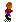

Eat The Whistle goes GPL!

Eat The Whistle is an opensource soccer game originally developed by Hurricane Studios as commercial product for the Amiga platform. It has a lot of features never seen in other soccer games.
The original Amiga version has been made portable with the help of the SDL library, now ETW runs on a wide range of machines, the site will keep precompiled binaries for Win32, Linux, MacOSX, AmigaOS, but it's possible to adapt it to run on every platform supported by SDL.
Click here to go to the Eat The Whistle SourceForge project page. Or here to go directly to the download section.
Actually this section is quite old and not updated but I hope to make it more useful in future, anyway it can give some ideas about the features of the game!
 Requirements:
Requirements:
- One of the following machine:
- A Windows (95/98/ME/NT/2000/XP) PC with at least 32MB of ram and a pentium class processor.
- An x86 linux box with similar features and X11.
- A MacOSX capable macintosh.
- An Amiga with a GFX card, AHI, 040 or better.
- The SDL runtime (1.2.0 or better) matching your configuration, you can find it here.
- One of the following machine:
- Here are some of the features:
- System friendly. Run in a window or fullscreen, can be played also on old machines (runs pefectly on a P200).
- World cup, leagues, cups with real teams (with slightly modified names).
- Time synchronized, faster CPU get faster framerate but not faster gameplay.
- Can be played through keyboard or joypad/joysticks (USB or Gameport).
- Network playing through TCP/IP (not yet finished).
- Very intuitive control method with acceleration/deceleration.
- More than 550 frames of animations for the players, 300 for the goalkeeper, 100 for the refree and a lot of other graphics.
- 30 different fields, including muddy, frozen and wet (actually only one included in the demo version to contain the archive size).
- Fouls, corners, throw-in with an intuitive control system.
- Role playing. (You can play a match as the whole team or only as a player).
- About every thing in the game is configurable via intuitive menus.
- Game Tactics and tactic editor.
- Heading and other special shots with intuitive controls.
- Team players (with individual stats) and team editor (the editor is actually available only for AmigaOS).
- Import SWOS teams.
- Arcade-like actions for "arcade mode" (powerups, bonuses... something like speedball II).
- Replays (with load/save option).
- Spoken comment (actually broken).
 Eat The Whistle it's probably one the most configurable soccer game written, it
has tons of options, here are some examples (click here for a picture
that shows one of the configuration menus):
Eat The Whistle it's probably one the most configurable soccer game written, it
has tons of options, here are some examples (click here for a picture
that shows one of the configuration menus):- you can play it with Joystick, two-button joystick, joypad or keyboard (two different, and configurable keyboard control methods), the joypad control is very similar to the Playstation's ISSPro one.
- There are 8 different pitch types and 7 different pitch conditions, the pitch condition
modify the aspect of the field! You can play on a wet field or on a snow covered one,
in this case the players will wear gloves
 !
!
- You can choose the daytime of the match, if the match is played in the evening the players have 4 shadows.
- You can choose screenmode (example hires picture), radar size, if you want to see always the match result or the active player name...
- You can play friendly matches, cups, leagues, world cups (picture) , training, penalties, free kicks.
- There is a great Arcade Mode with two different pitches that seem an arena and with 11 custom "arcade teams" (picture)(one is the secret one) and you can do a challenge similar to a beat'em'up with the gameplay that is mix between speedball and a soccer game! (picture)
- There are a LOT of cheat modes!
 Here are the Eat The Whistle related files you can find in my page, if you
have something intresting (teams, translations, tactics...) that you want to share
send them to me!
Here are the Eat The Whistle related files you can find in my page, if you
have something intresting (teams, translations, tactics...) that you want to share
send them to me!
Eat The Whistle GPL sourceforge download page
Old Links to the Amiga version stuff:
- ETW teams page! (30-3-99)
- Frequently Asked Questions V1.2 (8-1-99)
- Team Editor V1.3 (6-1-99)
- SWOS to ETW team converter! (4-1-99)
- ASCII Manual (12-12-98)
- Playable demo (600KB) (25-11-98)
If you have problems to download these files you can find most of these files in any Aminet mirror!

 gabriele.greco@aruba.it,
gabriele.greco@aruba.it, {kind=link}
{kind=link}
{kind=link}
{kind=link}
{kind=link}
{kind=link}
{kind=link}